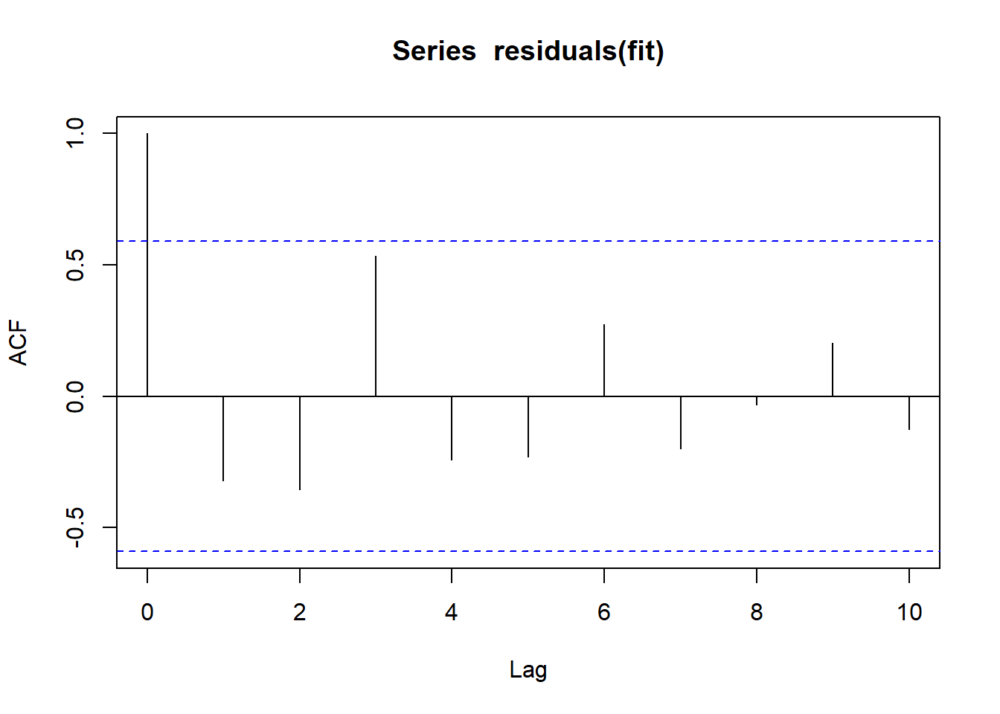
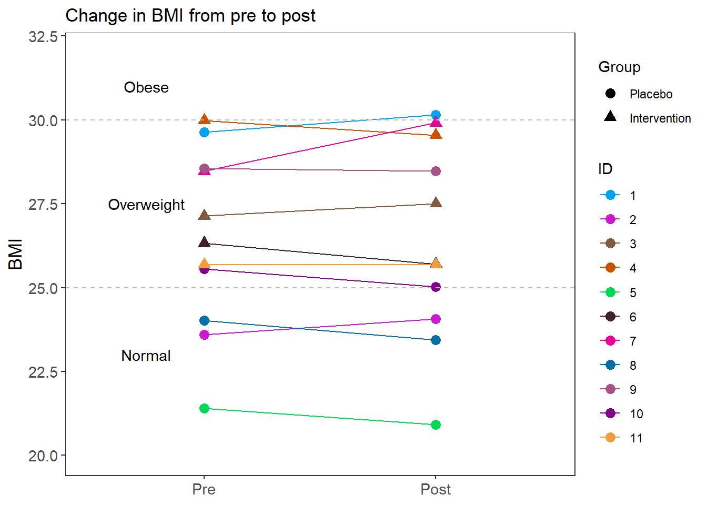
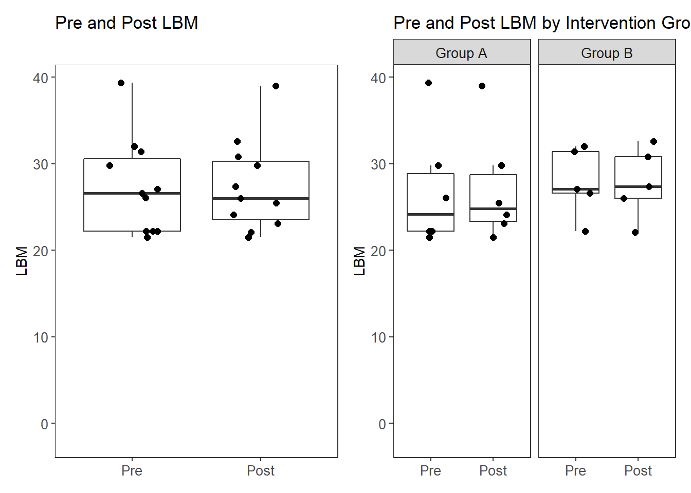
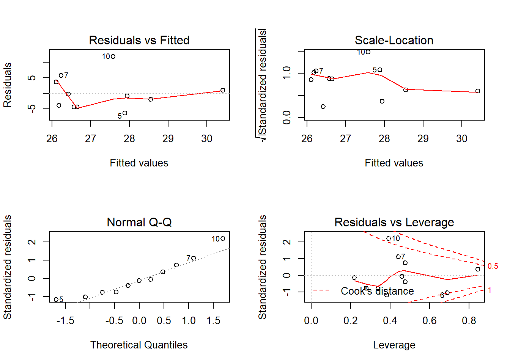
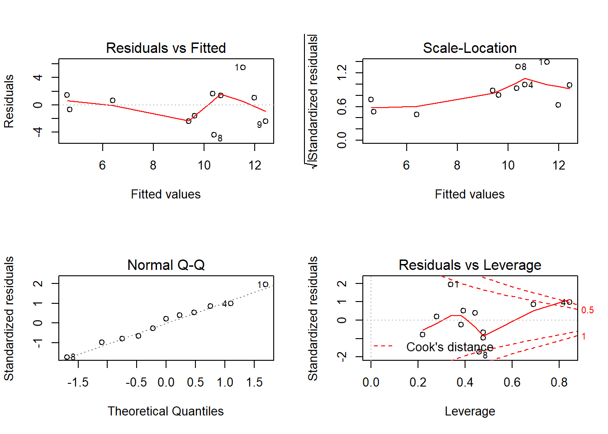

Anthropometric Analyses
Last updated: 2020-06-08
Checks: 6 1
Knit directory: Fiber_Intervention_Study/
This reproducible R Markdown analysis was created with workflowr (version 1.6.2). The Checks tab describes the reproducibility checks that were applied when the results were created. The Past versions tab lists the development history.
The R Markdown file has unstaged changes. To know which version of the R Markdown file created these results, you’ll want to first commit it to the Git repo. If you’re still working on the analysis, you can ignore this warning. When you’re finished, you can run wflow_publish to commit the R Markdown file and build the HTML.
Great job! The global environment was empty. Objects defined in the global environment can affect the analysis in your R Markdown file in unknown ways. For reproduciblity it’s best to always run the code in an empty environment.
The command set.seed(20191210) was run prior to running the code in the R Markdown file. Setting a seed ensures that any results that rely on randomness, e.g. subsampling or permutations, are reproducible.
Great job! Recording the operating system, R version, and package versions is critical for reproducibility.
Nice! There were no cached chunks for this analysis, so you can be confident that you successfully produced the results during this run.
Great job! Using relative paths to the files within your workflowr project makes it easier to run your code on other machines.
Great! You are using Git for version control. Tracking code development and connecting the code version to the results is critical for reproducibility.
The results in this page were generated with repository version 774d405. See the Past versions tab to see a history of the changes made to the R Markdown and HTML files.
Note that you need to be careful to ensure that all relevant files for the analysis have been committed to Git prior to generating the results (you can use wflow_publish or wflow_git_commit). workflowr only checks the R Markdown file, but you know if there are other scripts or data files that it depends on. Below is the status of the Git repository when the results were generated:
Ignored files:
Ignored: .Rhistory
Ignored: .Rproj.user/
Ignored: code/.Rhistory
Ignored: reference-papers/Dietary_Variables.xlsx
Ignored: reference-papers/Johnson_2019.pdf
Untracked files:
Untracked: fig/fig/
Untracked: fig/figure5_glmm.pdf
Untracked: fig/figure6.pdf
Untracked: renv/
Untracked: tab/figure6_data_change_BMI.csv
Untracked: tab/sample_size_summary.xlsx
Untracked: tab/table_1_results.csv
Unstaged changes:
Deleted: .Rprofile
Modified: analysis/analysis_anthropometric.Rmd
Modified: analysis/analysis_beta_diversity.Rmd
Modified: analysis/analysis_blood_data.Rmd
Modified: analysis/glme_microbiome.Rmd
Modified: analysis/microbiome_diet_trends.Rmd
Modified: analysis/summary_stats.Rmd
Modified: code/get_cleaned_data.R
Modified: fig/figure3_PCoA_analysis_results_beta_diversity_between_groups.pdf
Modified: fig/figure3_legend.pdf
Modified: fig/figure4.pdf
Modified: fig/figure4_legend.pdf
Modified: fig/microbiome_abundance_glmm_results.pdf
Note that any generated files, e.g. HTML, png, CSS, etc., are not included in this status report because it is ok for generated content to have uncommitted changes.
These are the previous versions of the repository in which changes were made to the R Markdown (analysis/analysis_anthropometric.Rmd) and HTML (docs/analysis_anthropometric.html) files. If you’ve configured a remote Git repository (see ?wflow_git_remote), click on the hyperlinks in the table below to view the files as they were in that past version.
| File | Version | Author | Date | Message |
|---|---|---|---|---|
| html | 0733fe5 | noah-padgett | 2020-05-21 | Build site. |
| Rmd | d576bdd | noah-padgett | 2020-05-21 | tables outputted |
| html | d576bdd | noah-padgett | 2020-05-21 | tables outputted |
| Rmd | ef7cab9 | noah-padgett | 2020-05-14 | blood measure analyses |
| Rmd | 774a55f | noah-padgett | 2020-04-16 | updated beta diversity and permanova |
| html | 774a55f | noah-padgett | 2020-04-16 | updated beta diversity and permanova |
Overview of aims
What is the effect of Prebiotin vs placebo on anthropometrics (controlling for diet, age, ethnicity, stress?) Did the intervention mitigate excess weight gain?
- BMI
- Lean Body Mass
- Visceral Fat Level
- Weight
Therefore, data are analyzed at the last timepoint observed for each participant (week 12). If a participant is missing an outcome at week 12, the last observed score will be carried forward.
Analyses
What is the effect of Prebiotin vs. placebo on …
mydata <- microbiome_data$meta.dat
mydata <- arrange(mydata, desc(Week))
mydata <- distinct(mydata, SubjectID, .keep_all = T)
varNames <- c("SubjectID", "Week", "Age", "Ethnicity",
"Gender", "Intervention",
"Height_cm", "Weight_pre", "Weight_post",
"LBM_pre", "LBM_post", "Visceral_Fat_Level_pre",
"Visceral_Fat_Level_post", "Stress.Scale")
mydata <- mydata[, varNames]
mydata<- mydata %>%
mutate(Weight_diff = Weight_pre - Weight_post,
BMI_pre = Weight_pre/((Height_cm/100)**2),
BMI_post = Weight_post/((Height_cm/100)**2),
BMI_diff = BMI_pre - BMI_post,
VFL_pre = Visceral_Fat_Level_pre,
VFL_post = Visceral_Fat_Level_post,
VFL_diff = VFL_pre - VFL_post,
LBM_diff = LBM_pre - LBM_post,
intB = ifelse(Intervention=="B", 1,0),
c.age = Age - mean(Age),
c.stress = Stress.Scale - mean(Stress.Scale),
female = ifelse(Gender == "F", 1, 0),
hispanic = ifelse(Ethnicity %in% c("White", "Asian", "Native America"), 1, 0))
plot.data <- mydata[,c(varNames[c(1:6,14,7:11)], "Weight_diff", "BMI_pre", "BMI_post", "BMI_diff", "VFL_pre", "VFL_post", "VFL_diff", "LBM_diff")]
plot.data <- plot.data %>%
pivot_longer(cols=c("Weight_pre", "Weight_post", "Weight_diff", "LBM_pre","LBM_post", "LBM_diff","BMI_pre", "BMI_post", "BMI_diff", "VFL_pre", "VFL_post", "VFL_diff"),
names_to = "Variable",
values_to = "value")Summary of these data is below
varNames <- c("intB", "female", "hispanic", "Age", "Stress.Scale",
"Weight_pre", "Weight_post", "Weight_diff",
"BMI_pre", "BMI_post", "BMI_diff",
"LBM_pre", "LBM_post", "LBM_diff",
"VFL_pre", "VFL_post", "VFL_diff")
sum.dat <- mydata[,varNames] %>%
summarise_all(list(Mean=mean, SD=sd,
min=min, Median=median, Max=max))
sum.dat <- data.frame(matrix(unlist(sum.dat), ncol=5))
colnames(sum.dat) <- c("Mean", "SD", "Min", "Median", "Max")
rownames(sum.dat) <- varNames
kable(sum.dat, format="html", digits=3)%>%
kable_styling(full_width = T)| Mean | SD | Min | Median | Max | |
|---|---|---|---|---|---|
| intB | 0.455 | 0.522 | 0.000 | 0.000 | 1.000 |
| female | 0.636 | 0.505 | 0.000 | 1.000 | 1.000 |
| hispanic | 0.636 | 0.505 | 0.000 | 1.000 | 1.000 |
| Age | 27.818 | 2.040 | 26.000 | 27.000 | 32.000 |
| Stress.Scale | 12.818 | 4.535 | 7.000 | 13.000 | 21.000 |
| Weight_pre | 71.200 | 10.730 | 53.100 | 67.900 | 86.700 |
| Weight_post | 71.218 | 11.276 | 51.900 | 67.900 | 89.200 |
| Weight_diff | -0.018 | 1.827 | -4.300 | 0.200 | 1.800 |
| BMI_pre | 26.394 | 2.689 | 21.406 | 26.322 | 29.976 |
| BMI_post | 26.401 | 2.982 | 20.922 | 25.697 | 30.154 |
| BMI_diff | -0.007 | 0.643 | -1.442 | 0.075 | 0.625 |
| LBM_pre | 27.318 | 5.524 | 21.500 | 26.600 | 39.400 |
| LBM_post | 27.445 | 5.261 | 21.500 | 26.000 | 39.000 |
| LBM_diff | -0.127 | 0.771 | -1.900 | 0.000 | 0.600 |
| VFL_pre | 9.455 | 3.643 | 5.000 | 9.000 | 17.000 |
| VFL_post | 9.273 | 3.875 | 4.000 | 8.000 | 17.000 |
| VFL_diff | 0.182 | 0.982 | -1.000 | 0.000 | 2.000 |
Summary of these data by Intervention Group
varNames <- c("Intervention",
"female", "hispanic", "Age", "Stress.Scale",
"Weight_pre", "Weight_post", "Weight_diff",
"BMI_pre", "BMI_post", "BMI_diff",
"LBM_pre", "LBM_post", "LBM_diff",
"VFL_pre", "VFL_post", "VFL_diff")
sum.dat <- mydata[,varNames] %>%
group_by(Intervention) %>%
summarise_all(list(Mean=mean, SD=sd,
min=min, Median=median, Max=max))
a <- data.frame(matrix(unlist(sum.dat[1,-1]), ncol=5))
b <- data.frame(matrix(unlist(sum.dat[2,-1]), ncol=5))
a <- cbind(rep("A", 16), a); colnames(a) <- c("Intervention", "Mean", "SD", "Min", "Median", "Max")
b <- cbind(rep("B", 16), b); colnames(b) <- c("Intervention", "Mean", "SD", "Min", "Median", "Max")
sum.dat <- rbind(a,b)
sum.dat <- data.frame(Variable=rep(varNames[-1],2), sum.dat)
sum.dat <- arrange(sum.dat, Variable)
kable(sum.dat, format="html", digits=3)%>%
kable_styling(full_width = T)| Variable | Intervention | Mean | SD | Min | Median | Max |
|---|---|---|---|---|---|---|
| Age | A | 27.333 | 1.506 | 26.000 | 27.000 | 30.000 |
| Age | B | 28.400 | 2.608 | 26.000 | 28.000 | 32.000 |
| BMI_diff | A | 0.113 | 0.503 | -0.524 | 0.279 | 0.577 |
| BMI_diff | B | -0.150 | 0.818 | -1.442 | 0.000 | 0.625 |
| BMI_post | A | 25.347 | 3.401 | 20.922 | 24.541 | 30.154 |
| BMI_post | B | 27.666 | 2.024 | 25.682 | 27.502 | 29.908 |
| BMI_pre | A | 25.460 | 3.127 | 21.406 | 24.787 | 29.630 |
| BMI_pre | B | 27.516 | 1.724 | 25.682 | 27.133 | 29.976 |
| female | A | 0.667 | 0.516 | 0.000 | 1.000 | 1.000 |
| female | B | 0.600 | 0.548 | 0.000 | 1.000 | 1.000 |
| hispanic | A | 0.500 | 0.548 | 0.000 | 0.500 | 1.000 |
| hispanic | B | 0.800 | 0.447 | 0.000 | 1.000 | 1.000 |
| LBM_diff | A | -0.300 | 0.938 | -1.900 | 0.000 | 0.600 |
| LBM_diff | B | 0.080 | 0.536 | -0.600 | 0.100 | 0.600 |
| LBM_post | A | 27.167 | 6.447 | 21.500 | 24.800 | 39.000 |
| LBM_post | B | 27.780 | 4.121 | 22.100 | 27.400 | 32.600 |
| LBM_pre | A | 26.867 | 6.908 | 21.500 | 24.150 | 39.400 |
| LBM_pre | B | 27.860 | 3.996 | 22.200 | 27.100 | 32.000 |
| Stress.Scale | A | 10.667 | 3.204 | 7.000 | 11.000 | 15.000 |
| Stress.Scale | B | 15.400 | 4.827 | 8.000 | 15.000 | 21.000 |
| VFL_diff | A | 0.500 | 1.049 | -1.000 | 0.500 | 2.000 |
| VFL_diff | B | -0.200 | 0.837 | -1.000 | 0.000 | 1.000 |
| VFL_post | A | 8.333 | 4.676 | 4.000 | 6.500 | 17.000 |
| VFL_post | B | 10.400 | 2.702 | 7.000 | 12.000 | 13.000 |
| VFL_pre | A | 8.833 | 4.309 | 5.000 | 8.000 | 17.000 |
| VFL_pre | B | 10.200 | 2.950 | 7.000 | 12.000 | 13.000 |
| Weight_diff | A | 0.367 | 1.363 | -1.300 | 0.700 | 1.800 |
| Weight_diff | B | -0.480 | 2.353 | -4.300 | 0.000 | 1.600 |
| Weight_post | A | 68.600 | 12.146 | 51.900 | 68.700 | 84.900 |
| Weight_post | B | 74.360 | 10.527 | 65.800 | 67.900 | 89.200 |
| Weight_pre | A | 68.967 | 12.199 | 53.100 | 68.000 | 86.700 |
| Weight_pre | B | 73.880 | 9.238 | 66.200 | 67.900 | 84.900 |
Next, the aim is to more formally test for differences between intervention groups.
results.diff <- list()BMI
# plot
p1 <- ggplot(filter(plot.data, Variable %like% "BMI"),
aes(x=Variable, y=value))+
geom_boxplot(outlier.shape = NA)+
geom_jitter(width = 0.25)+
scale_x_discrete(labels=c("BMI_pre"="Pre", "BMI_post"="Post"),
limits=c("BMI_pre", "BMI_post"))+
labs(x=NULL, y="BMI", title="Pre and Post BMI")+
theme(panel.grid = element_blank(),
axis.text = element_text(size=10))
#p1
p2 <- ggplot(filter(plot.data, Variable %like% "BMI"),
aes(x=Variable, y=value))+
geom_boxplot(outlier.shape = NA)+
geom_jitter(width = 0.25, size=2)+
scale_x_discrete(labels=c("BMI_pre"="Pre", "BMI_post"="Post"),
limits=c("BMI_pre", "BMI_post"))+
labs(x=NULL, y="BMI", title="Pre and Post BMI by Intervention Group")+
facet_grid(.~Intervention, labeller = labeller(Intervention = c(A = "Group A", B = "Group B")))+
theme(panel.grid = element_blank(),
axis.text = element_text(size=10),
strip.text = element_text(size=10))
#p2
p <- p1 + p2
pWarning: Removed 11 rows containing missing values (stat_boxplot).Warning: Removed 11 rows containing missing values (geom_point).Warning: Removed 11 rows containing missing values (stat_boxplot).Warning: Removed 11 rows containing missing values (geom_point).Pre BMI
This is simply to double check that no differences occured at baseline.
# Pre INtervention BMI - should beno difference
fit <- lm(BMI_pre ~ Intervention + c.age + hispanic + c.stress, mydata)
anova(fit)Analysis of Variance Table
Response: BMI_pre
Df Sum Sq Mean Sq F value Pr(>F)
Intervention 1 11.525 11.525 2.7527 0.1482
c.age 1 0.369 0.369 0.0881 0.7766
hispanic 1 35.033 35.033 8.3673 0.0276 *
c.stress 1 0.273 0.273 0.0652 0.8069
Residuals 6 25.121 4.187
---
Signif. codes: 0 '***' 0.001 '**' 0.01 '*' 0.05 '.' 0.1 ' ' 1# diagnostic plots
layout(matrix(c(1,2,3,4),2,2)) # optional layout
plot(fit) # diagnostic plots# normality again
shapiro.test(residuals(fit))
Shapiro-Wilk normality test
data: residuals(fit)
W = 0.9521, p-value = 0.6709# independence
durbinWatsonTest(fit) lag Autocorrelation D-W Statistic p-value
1 -0.3227466 2.393209 0.454
Alternative hypothesis: rho != 0layout(matrix(c(1),1,1))
acf(residuals(fit))
# nice wrapper function to generally test a lot of stuff
gvmodel <- gvlma(fit)
summary(gvmodel)
Call:
lm(formula = BMI_pre ~ Intervention + c.age + hispanic + c.stress,
data = mydata)
Residuals:
Min 1Q Median 3Q Max
-2.6671 -0.9978 0.2079 0.6727 2.6994
Coefficients:
Estimate Std. Error t value Pr(>|t|)
(Intercept) 27.57014 1.14100 24.163 3.3e-07 ***
InterventionB 3.46721 2.12017 1.635 0.1531
c.age -0.35684 0.48903 -0.730 0.4931
hispanic -4.32429 1.65253 -2.617 0.0398 *
c.stress 0.05628 0.22036 0.255 0.8069
---
Signif. codes: 0 '***' 0.001 '**' 0.01 '*' 0.05 '.' 0.1 ' ' 1
Residual standard error: 2.046 on 6 degrees of freedom
Multiple R-squared: 0.6526, Adjusted R-squared: 0.4211
F-statistic: 2.818 on 4 and 6 DF, p-value: 0.124
ASSESSMENT OF THE LINEAR MODEL ASSUMPTIONS
USING THE GLOBAL TEST ON 4 DEGREES-OF-FREEDOM:
Level of Significance = 0.05
Call:
gvlma(x = fit)
Value p-value Decision
Global Stat 5.75961 0.21783 Assumptions acceptable.
Skewness 0.03115 0.85992 Assumptions acceptable.
Kurtosis 0.19354 0.65999 Assumptions acceptable.
Link Function 4.14455 0.04177 Assumptions NOT satisfied!
Heteroscedasticity 1.39037 0.23834 Assumptions acceptable.No significant differences.
Post BMI
Test for significant differences after intervention
# Post INtervention BMI - should beno difference
# not controls
fit <- lm(BMI_post ~ Intervention, mydata)
anova(fit)Analysis of Variance Table
Response: BMI_post
Df Sum Sq Mean Sq F value Pr(>F)
Intervention 1 14.673 14.6730 1.779 0.215
Residuals 9 74.231 8.2479 summary(fit)
Call:
lm(formula = BMI_post ~ Intervention, data = mydata)
Residuals:
Min 1Q Median 3Q Max
-4.4244 -1.9352 -0.3242 2.0589 4.8071
Coefficients:
Estimate Std. Error t value Pr(>|t|)
(Intercept) 25.347 1.172 21.618 4.57e-09 ***
InterventionB 2.320 1.739 1.334 0.215
---
Signif. codes: 0 '***' 0.001 '**' 0.01 '*' 0.05 '.' 0.1 ' ' 1
Residual standard error: 2.872 on 9 degrees of freedom
Multiple R-squared: 0.165, Adjusted R-squared: 0.07227
F-statistic: 1.779 on 1 and 9 DF, p-value: 0.215fit <- lm(BMI_post ~ Intervention + c.age + hispanic + c.stress,
mydata)
anova(fit)Analysis of Variance Table
Response: BMI_post
Df Sum Sq Mean Sq F value Pr(>F)
Intervention 1 14.673 14.673 2.7695 0.14713
c.age 1 0.602 0.602 0.1137 0.74747
hispanic 1 41.131 41.131 7.7634 0.03173 *
c.stress 1 0.709 0.709 0.1339 0.72696
Residuals 6 31.788 5.298
---
Signif. codes: 0 '***' 0.001 '**' 0.01 '*' 0.05 '.' 0.1 ' ' 1summary(fit)
Call:
lm(formula = BMI_post ~ Intervention + c.age + hispanic + c.stress,
data = mydata)
Residuals:
Min 1Q Median 3Q Max
-2.6992 -1.1714 0.2195 1.1039 2.6958
Coefficients:
Estimate Std. Error t value Pr(>|t|)
(Intercept) 27.56605 1.28351 21.477 6.65e-07 ***
InterventionB 3.88642 2.38498 1.630 0.1543
c.age -0.57580 0.55011 -1.047 0.3356
hispanic -4.60697 1.85893 -2.478 0.0479 *
c.stress 0.09071 0.24789 0.366 0.7270
---
Signif. codes: 0 '***' 0.001 '**' 0.01 '*' 0.05 '.' 0.1 ' ' 1
Residual standard error: 2.302 on 6 degrees of freedom
Multiple R-squared: 0.6424, Adjusted R-squared: 0.4041
F-statistic: 2.695 on 4 and 6 DF, p-value: 0.1338# diagnostic plots
layout(matrix(c(1,2,3,4),2,2)) # optional layout
plot(fit) # diagnostic plots# normality again
shapiro.test(residuals(fit))
Shapiro-Wilk normality test
data: residuals(fit)
W = 0.95151, p-value = 0.6633# independence
durbinWatsonTest(fit) lag Autocorrelation D-W Statistic p-value
1 -0.3275118 2.33383 0.554
Alternative hypothesis: rho != 0layout(matrix(c(1),1,1))
acf(residuals(fit))# nice wrapper function to generally test a lot of stuff
gvmodel <- gvlma(fit)
summary(gvmodel)
Call:
lm(formula = BMI_post ~ Intervention + c.age + hispanic + c.stress,
data = mydata)
Residuals:
Min 1Q Median 3Q Max
-2.6992 -1.1714 0.2195 1.1039 2.6958
Coefficients:
Estimate Std. Error t value Pr(>|t|)
(Intercept) 27.56605 1.28351 21.477 6.65e-07 ***
InterventionB 3.88642 2.38498 1.630 0.1543
c.age -0.57580 0.55011 -1.047 0.3356
hispanic -4.60697 1.85893 -2.478 0.0479 *
c.stress 0.09071 0.24789 0.366 0.7270
---
Signif. codes: 0 '***' 0.001 '**' 0.01 '*' 0.05 '.' 0.1 ' ' 1
Residual standard error: 2.302 on 6 degrees of freedom
Multiple R-squared: 0.6424, Adjusted R-squared: 0.4041
F-statistic: 2.695 on 4 and 6 DF, p-value: 0.1338
ASSESSMENT OF THE LINEAR MODEL ASSUMPTIONS
USING THE GLOBAL TEST ON 4 DEGREES-OF-FREEDOM:
Level of Significance = 0.05
Call:
gvlma(x = fit)
Value p-value Decision
Global Stat 4.82808 0.30540 Assumptions acceptable.
Skewness 0.05744 0.81058 Assumptions acceptable.
Kurtosis 0.51849 0.47148 Assumptions acceptable.
Link Function 3.11367 0.07764 Assumptions acceptable.
Heteroscedasticity 1.13847 0.28598 Assumptions acceptable.No significant difference found.
Difference Scores of BMI
Test for significant differences after intervention
# Post INtervention BMI - should beno difference
# not controls
fit <- lm(BMI_diff ~ Intervention, mydata)
anova(fit)Analysis of Variance Table
Response: BMI_diff
Df Sum Sq Mean Sq F value Pr(>F)
Intervention 1 0.1898 0.18982 0.4332 0.5269
Residuals 9 3.9434 0.43815 summary(fit)
Call:
lm(formula = BMI_diff ~ Intervention, data = mydata)
Residuals:
Min 1Q Median 3Q Max
-1.2913 -0.3965 0.1505 0.4402 0.7753
Coefficients:
Estimate Std. Error t value Pr(>|t|)
(Intercept) 0.1133 0.2702 0.419 0.685
InterventionB -0.2638 0.4008 -0.658 0.527
Residual standard error: 0.6619 on 9 degrees of freedom
Multiple R-squared: 0.04592, Adjusted R-squared: -0.06008
F-statistic: 0.4332 on 1 and 9 DF, p-value: 0.5269fit <- lm(BMI_diff ~ Intervention + c.age + hispanic + c.stress,
mydata)
anova(fit)Analysis of Variance Table
Response: BMI_diff
Df Sum Sq Mean Sq F value Pr(>F)
Intervention 1 0.18982 0.18982 0.6768 0.44215
c.age 1 1.91391 1.91391 6.8243 0.03999 *
hispanic 1 0.24454 0.24454 0.8719 0.38646
c.stress 1 0.10221 0.10221 0.3644 0.56815
Residuals 6 1.68273 0.28045
---
Signif. codes: 0 '***' 0.001 '**' 0.01 '*' 0.05 '.' 0.1 ' ' 1summary(fit)
Call:
lm(formula = BMI_diff ~ Intervention + c.age + hispanic + c.stress,
data = mydata)
Residuals:
Min 1Q Median 3Q Max
-0.62947 -0.28789 0.00361 0.31689 0.60568
Coefficients:
Estimate Std. Error t value Pr(>|t|)
(Intercept) 0.00409 0.29531 0.014 0.989
InterventionB -0.41921 0.54873 -0.764 0.474
c.age 0.21896 0.12657 1.730 0.134
hispanic 0.28268 0.42770 0.661 0.533
c.stress -0.03443 0.05703 -0.604 0.568
Residual standard error: 0.5296 on 6 degrees of freedom
Multiple R-squared: 0.5929, Adjusted R-squared: 0.3215
F-statistic: 2.184 on 4 and 6 DF, p-value: 0.1875results.diff[["BMI"]] <- summary(fit)[["coefficients"]]
# diagnostic plots
layout(matrix(c(1,2,3,4),2,2)) # optional layout
plot(fit) # diagnostic plots# normality again
shapiro.test(residuals(fit))
Shapiro-Wilk normality test
data: residuals(fit)
W = 0.95023, p-value = 0.6469# independence
durbinWatsonTest(fit) lag Autocorrelation D-W Statistic p-value
1 0.01418472 1.683813 0.678
Alternative hypothesis: rho != 0layout(matrix(c(1),1,1))
acf(residuals(fit))# nice wrapper function to generally test a lot of stuff
gvmodel <- gvlma(fit)
summary(gvmodel)
Call:
lm(formula = BMI_diff ~ Intervention + c.age + hispanic + c.stress,
data = mydata)
Residuals:
Min 1Q Median 3Q Max
-0.62947 -0.28789 0.00361 0.31689 0.60568
Coefficients:
Estimate Std. Error t value Pr(>|t|)
(Intercept) 0.00409 0.29531 0.014 0.989
InterventionB -0.41921 0.54873 -0.764 0.474
c.age 0.21896 0.12657 1.730 0.134
hispanic 0.28268 0.42770 0.661 0.533
c.stress -0.03443 0.05703 -0.604 0.568
Residual standard error: 0.5296 on 6 degrees of freedom
Multiple R-squared: 0.5929, Adjusted R-squared: 0.3215
F-statistic: 2.184 on 4 and 6 DF, p-value: 0.1875
ASSESSMENT OF THE LINEAR MODEL ASSUMPTIONS
USING THE GLOBAL TEST ON 4 DEGREES-OF-FREEDOM:
Level of Significance = 0.05
Call:
gvlma(x = fit)
Value p-value Decision
Global Stat 1.62530 0.8042 Assumptions acceptable.
Skewness 0.04558 0.8309 Assumptions acceptable.
Kurtosis 0.62676 0.4285 Assumptions acceptable.
Link Function 0.46154 0.4969 Assumptions acceptable.
Heteroscedasticity 0.49142 0.4833 Assumptions acceptable.Therefore, we have evidence that BMI is not effected by Prebiotic vs. placebo.
Figure 6 changes in BMI
cols <- c("#00a2f2", "#c91acb", "#7f5940", "#cc5200", "#00d957", "#40202d", "#e60099", "#006fa6", "#a6538a", "#83008c", "#f29d3d","#a3d936", "#300059", "#566573", "#336655", "#d9a3aa", "#400009", "#0020f2", "#8091ff", "#fbffbf", "#00ffcc", "#8c4f46", "#354020", "#39c3e6", "#333a66", "#ff0000", "#6a8040", "#730f00", "#0a4d00", "#ffe1bf", "#a3d9b1", "#003033", "#f29979", "#00b3a7", "#cbace6", "#bfd9ff", "#bf0000", "#293aa6", "#594943", "#e5c339", "#402910")
weight.dat <- filter(plot.data, Variable %in% c("BMI_pre", "BMI_post"))
weight.dat$time <- ifelse(weight.dat$Variable == "BMI_pre", "Pre", "Post")
weight.dat$time <- factor(weight.dat$time, levels=c("Pre", "Post"), ordered=T)
weight.dat$ID <- factor(weight.dat$SubjectID, levels=unique(weight.dat$SubjectID), labels=1:length(unique(weight.dat$SubjectID)))
p <- ggplot(weight.dat, aes(time, value, group=ID, color=ID, shape=Intervention)) +
geom_line()+
geom_point(size=3)+
geom_hline(yintercept = 25, color="red")+
geom_hline(yintercept = 30, color="red")+
labs(y="BMI", x=NULL,
title="Change in BMI from pre to post")+
lims(y=c(20,32))+
scale_color_manual(values=cols)+
annotate("text", x=0.75, y=23, label="Normal")+
annotate("text", x=0.75, y=27.5, label="Overweight")+
annotate("text", x=0.75, y=31, label="Obese")+
theme(panel.grid = element_blank(),
axis.text.y = element_text(size=11),
axis.text.x = element_text(size=11),
axis.title.y = element_text(size=13),
axis.title.x = element_blank())
p
ggsave("fig/figure6.pdf", p, width=5,height=6, units="in")
#write.csv(weight.dat, paste0(w.d, "/tab/change_BMI.csv"))Lean Body Mass (LBM)
# plot
p1 <- ggplot(filter(plot.data, Variable %like% "LBM"),
aes(x=Variable, y=value))+
geom_boxplot(outlier.shape = NA)+
geom_jitter(width = 0.25, size=2)+
scale_x_discrete(labels=c("LBM_pre"="Pre", "LBM_post"="Post"),
limits=c("LBM_pre", "LBM_post"))+
labs(x=NULL, y="LBM", title="Pre and Post LBM")+
theme(panel.grid = element_blank(),
axis.text = element_text(size=10))
#p1
p2 <- ggplot(filter(plot.data, Variable %like% "LBM"),
aes(x=Variable, y=value))+
geom_boxplot(outlier.shape = NA)+
geom_jitter(width = 0.25, size=2)+
scale_x_discrete(labels=c("LBM_pre"="Pre", "LBM_post"="Post"),
limits=c("LBM_pre", "LBM_post"))+
labs(x=NULL, y="LBM", title="Pre and Post LBM by Intervention Group")+
facet_grid(.~Intervention, labeller = labeller(Intervention = c(A = "Group A", B = "Group B")))+
theme(panel.grid = element_blank(),
axis.text = element_text(size=10),
strip.text = element_text(size=10))
#p2
p <- p1 + p2
pWarning: Removed 11 rows containing missing values (stat_boxplot).Warning: Removed 11 rows containing missing values (geom_point).Warning: Removed 11 rows containing missing values (stat_boxplot).Warning: Removed 11 rows containing missing values (geom_point).
Pre LBM
This is simply to double check that no differences occured at baseline.
# Pre INtervention LBM - should beno difference
fit <- lm(LBM_pre ~ Intervention + c.age + hispanic + c.stress, mydata)
anova(fit)Analysis of Variance Table
Response: LBM_pre
Df Sum Sq Mean Sq F value Pr(>F)
Intervention 1 2.691 2.691 0.0561 0.8206
c.age 1 2.124 2.124 0.0443 0.8402
hispanic 1 0.001 0.001 0.0000 0.9967
c.stress 1 12.775 12.775 0.2665 0.6241
Residuals 6 287.605 47.934 # diagnostic plots
layout(matrix(c(1,2,3,4),2,2)) # optional layout
plot(fit) # diagnostic plots
# normality again
shapiro.test(residuals(fit))
Shapiro-Wilk normality test
data: residuals(fit)
W = 0.9156, p-value = 0.2837# independence
durbinWatsonTest(fit) lag Autocorrelation D-W Statistic p-value
1 0.1254505 1.669594 0.694
Alternative hypothesis: rho != 0layout(matrix(c(1),1,1))
acf(residuals(fit))# nice wrapper function to generally test a lot of stuff
gvmodel <- gvlma(fit)
summary(gvmodel)
Call:
lm(formula = LBM_pre ~ Intervention + c.age + hispanic + c.stress,
data = mydata)
Residuals:
Min 1Q Median 3Q Max
-6.3822 -4.1700 -0.8369 2.3452 11.8227
Coefficients:
Estimate Std. Error t value Pr(>|t|)
(Intercept) 26.3882 3.8607 6.835 0.000482 ***
InterventionB 3.4391 7.1738 0.479 0.648631
c.age -0.3049 1.6547 -0.184 0.859875
hispanic -0.9950 5.5915 -0.178 0.864615
c.stress -0.3849 0.7456 -0.516 0.624142
---
Signif. codes: 0 '***' 0.001 '**' 0.01 '*' 0.05 '.' 0.1 ' ' 1
Residual standard error: 6.923 on 6 degrees of freedom
Multiple R-squared: 0.05764, Adjusted R-squared: -0.5706
F-statistic: 0.09175 on 4 and 6 DF, p-value: 0.9816
ASSESSMENT OF THE LINEAR MODEL ASSUMPTIONS
USING THE GLOBAL TEST ON 4 DEGREES-OF-FREEDOM:
Level of Significance = 0.05
Call:
gvlma(x = fit)
Value p-value Decision
Global Stat 3.055492 0.5486 Assumptions acceptable.
Skewness 1.646157 0.1995 Assumptions acceptable.
Kurtosis 0.007273 0.9320 Assumptions acceptable.
Link Function 0.154379 0.6944 Assumptions acceptable.
Heteroscedasticity 1.247683 0.2640 Assumptions acceptable.No significant differences.
Post LBM
Test for significant differences after intervention
# Post INtervention LBM - should beno difference
# not controls
fit <- lm(LBM_post ~ Intervention, mydata)
anova(fit)Analysis of Variance Table
Response: LBM_post
Df Sum Sq Mean Sq F value Pr(>F)
Intervention 1 1.026 1.0259 0.0335 0.8589
Residuals 9 275.721 30.6357 summary(fit)
Call:
lm(formula = LBM_post ~ Intervention, data = mydata)
Residuals:
Min 1Q Median 3Q Max
-5.680 -3.567 -1.667 2.827 11.833
Coefficients:
Estimate Std. Error t value Pr(>|t|)
(Intercept) 27.1667 2.2596 12.023 7.58e-07 ***
InterventionB 0.6133 3.3516 0.183 0.859
---
Signif. codes: 0 '***' 0.001 '**' 0.01 '*' 0.05 '.' 0.1 ' ' 1
Residual standard error: 5.535 on 9 degrees of freedom
Multiple R-squared: 0.003707, Adjusted R-squared: -0.107
F-statistic: 0.03349 on 1 and 9 DF, p-value: 0.8589fit <- lm(LBM_post ~ Intervention + c.age + hispanic + c.stress,
mydata)
anova(fit)Analysis of Variance Table
Response: LBM_post
Df Sum Sq Mean Sq F value Pr(>F)
Intervention 1 1.026 1.026 0.0231 0.8841
c.age 1 0.094 0.094 0.0021 0.9647
hispanic 1 0.054 0.054 0.0012 0.9733
c.stress 1 9.506 9.506 0.2144 0.6597
Residuals 6 266.067 44.345 summary(fit)
Call:
lm(formula = LBM_post ~ Intervention + c.age + hispanic + c.stress,
data = mydata)
Residuals:
Min 1Q Median 3Q Max
-6.6654 -3.4551 -0.8474 2.3115 11.2320
Coefficients:
Estimate Std. Error t value Pr(>|t|)
(Intercept) 26.6108 3.7133 7.166 0.000373 ***
InterventionB 2.8196 6.8999 0.409 0.696992
c.age -0.3974 1.5915 -0.250 0.811144
hispanic -0.7023 5.3780 -0.131 0.900371
c.stress -0.3320 0.7172 -0.463 0.659689
---
Signif. codes: 0 '***' 0.001 '**' 0.01 '*' 0.05 '.' 0.1 ' ' 1
Residual standard error: 6.659 on 6 degrees of freedom
Multiple R-squared: 0.03859, Adjusted R-squared: -0.6023
F-statistic: 0.06021 on 4 and 6 DF, p-value: 0.9915# diagnostic plots
layout(matrix(c(1,2,3,4),2,2)) # optional layout
plot(fit) # diagnostic plots
# normality again
shapiro.test(residuals(fit))
Shapiro-Wilk normality test
data: residuals(fit)
W = 0.92512, p-value = 0.3636# independence
durbinWatsonTest(fit) lag Autocorrelation D-W Statistic p-value
1 0.01493663 1.888619 0.926
Alternative hypothesis: rho != 0layout(matrix(c(1),1,1))
acf(residuals(fit))# nice wrapper function to generally test a lot of stuff
gvmodel <- gvlma(fit)
summary(gvmodel)
Call:
lm(formula = LBM_post ~ Intervention + c.age + hispanic + c.stress,
data = mydata)
Residuals:
Min 1Q Median 3Q Max
-6.6654 -3.4551 -0.8474 2.3115 11.2320
Coefficients:
Estimate Std. Error t value Pr(>|t|)
(Intercept) 26.6108 3.7133 7.166 0.000373 ***
InterventionB 2.8196 6.8999 0.409 0.696992
c.age -0.3974 1.5915 -0.250 0.811144
hispanic -0.7023 5.3780 -0.131 0.900371
c.stress -0.3320 0.7172 -0.463 0.659689
---
Signif. codes: 0 '***' 0.001 '**' 0.01 '*' 0.05 '.' 0.1 ' ' 1
Residual standard error: 6.659 on 6 degrees of freedom
Multiple R-squared: 0.03859, Adjusted R-squared: -0.6023
F-statistic: 0.06021 on 4 and 6 DF, p-value: 0.9915
ASSESSMENT OF THE LINEAR MODEL ASSUMPTIONS
USING THE GLOBAL TEST ON 4 DEGREES-OF-FREEDOM:
Level of Significance = 0.05
Call:
gvlma(x = fit)
Value p-value Decision
Global Stat 3.68147 0.4508 Assumptions acceptable.
Skewness 1.50739 0.2195 Assumptions acceptable.
Kurtosis 0.00273 0.9583 Assumptions acceptable.
Link Function 0.61043 0.4346 Assumptions acceptable.
Heteroscedasticity 1.56092 0.2115 Assumptions acceptable.Difference Scores of LBM
Test for significant differences after intervention
# Post INtervention LBM - should beno difference
# not controls
fit <- lm(LBM_diff ~ Intervention, mydata)
anova(fit)Analysis of Variance Table
Response: LBM_diff
Df Sum Sq Mean Sq F value Pr(>F)
Intervention 1 0.3938 0.39382 0.6389 0.4447
Residuals 9 5.5480 0.61644 summary(fit)
Call:
lm(formula = LBM_diff ~ Intervention, data = mydata)
Residuals:
Min 1Q Median 3Q Max
-1.60 -0.49 0.30 0.52 0.90
Coefficients:
Estimate Std. Error t value Pr(>|t|)
(Intercept) -0.3000 0.3205 -0.936 0.374
InterventionB 0.3800 0.4754 0.799 0.445
Residual standard error: 0.7851 on 9 degrees of freedom
Multiple R-squared: 0.06628, Adjusted R-squared: -0.03747
F-statistic: 0.6389 on 1 and 9 DF, p-value: 0.4447fit <- lm(LBM_diff ~ Intervention + c.age + hispanic + c.stress,
mydata)
anova(fit)Analysis of Variance Table
Response: LBM_diff
Df Sum Sq Mean Sq F value Pr(>F)
Intervention 1 0.3938 0.39382 0.5993 0.4682
c.age 1 1.3230 1.32300 2.0133 0.2057
hispanic 1 0.0409 0.04091 0.0623 0.8113
c.stress 1 0.2412 0.24124 0.3671 0.5668
Residuals 6 3.9428 0.65714 summary(fit)
Call:
lm(formula = LBM_diff ~ Intervention + c.age + hispanic + c.stress,
data = mydata)
Residuals:
Min 1Q Median 3Q Max
-1.31265 -0.37213 0.06805 0.51538 0.77942
Coefficients:
Estimate Std. Error t value Pr(>|t|)
(Intercept) -0.22258 0.45203 -0.492 0.640
InterventionB 0.61951 0.83995 0.738 0.489
c.age 0.09251 0.19374 0.478 0.650
hispanic -0.29273 0.65469 -0.447 0.670
c.stress -0.05289 0.08730 -0.606 0.567
Residual standard error: 0.8106 on 6 degrees of freedom
Multiple R-squared: 0.3364, Adjusted R-squared: -0.106
F-statistic: 0.7605 on 4 and 6 DF, p-value: 0.5871results.diff[["LBM"]] <- summary(fit)[["coefficients"]]
# diagnostic plots
layout(matrix(c(1,2,3,4),2,2)) # optional layout
plot(fit) # diagnostic plots# normality again
shapiro.test(residuals(fit))
Shapiro-Wilk normality test
data: residuals(fit)
W = 0.93955, p-value = 0.5152# independence
durbinWatsonTest(fit) lag Autocorrelation D-W Statistic p-value
1 0.5506934 0.6556207 0.024
Alternative hypothesis: rho != 0layout(matrix(c(1),1,1))
acf(residuals(fit))# nice wrapper function to generally test a lot of stuff
gvmodel <- gvlma(fit)
summary(gvmodel)
Call:
lm(formula = LBM_diff ~ Intervention + c.age + hispanic + c.stress,
data = mydata)
Residuals:
Min 1Q Median 3Q Max
-1.31265 -0.37213 0.06805 0.51538 0.77942
Coefficients:
Estimate Std. Error t value Pr(>|t|)
(Intercept) -0.22258 0.45203 -0.492 0.640
InterventionB 0.61951 0.83995 0.738 0.489
c.age 0.09251 0.19374 0.478 0.650
hispanic -0.29273 0.65469 -0.447 0.670
c.stress -0.05289 0.08730 -0.606 0.567
Residual standard error: 0.8106 on 6 degrees of freedom
Multiple R-squared: 0.3364, Adjusted R-squared: -0.106
F-statistic: 0.7605 on 4 and 6 DF, p-value: 0.5871
ASSESSMENT OF THE LINEAR MODEL ASSUMPTIONS
USING THE GLOBAL TEST ON 4 DEGREES-OF-FREEDOM:
Level of Significance = 0.05
Call:
gvlma(x = fit)
Value p-value Decision
Global Stat 5.24671 0.26291 Assumptions acceptable.
Skewness 0.84929 0.35675 Assumptions acceptable.
Kurtosis 0.04929 0.82430 Assumptions acceptable.
Link Function 3.88262 0.04879 Assumptions NOT satisfied!
Heteroscedasticity 0.46551 0.49506 Assumptions acceptable.Therefore, we have evidence that LBM is not effected by Prebiotic vs. placebo.
Visceral Fat Level (VFL) Fat Mass
# plot
p1 <- ggplot(filter(plot.data, Variable %like% "VFL"),
aes(x=Variable, y=value))+
geom_boxplot(outlier.shape = NA)+
geom_jitter(width = 0.25, size=2)+
scale_x_discrete(labels=c("VFL_pre"="Pre", "VFL_post"="Post"),
limits=c("VFL_pre", "VFL_post"))+
labs(x=NULL, y="VFL", title="Pre and Post VFL")+
theme(panel.grid = element_blank(),
axis.text = element_text(size=10))
#p1
p2 <- ggplot(filter(plot.data, Variable %like% "VFL"),
aes(x=Variable, y=value))+
geom_boxplot(outlier.shape = NA)+
geom_jitter(width = 0.25, size=2)+
scale_x_discrete(labels=c("VFL_pre"="Pre", "VFL_post"="Post"),
limits=c("VFL_pre", "VFL_post"))+
labs(x=NULL, y="VFL", title="Pre and Post VFL by Intervention Group")+
facet_grid(.~Intervention, labeller = labeller(Intervention = c(A = "Group A", B = "Group B")))+
theme(panel.grid = element_blank(),
axis.text = element_text(size=10),
strip.text = element_text(size=10))
#p2
p <- p1 + p2
pWarning: Removed 11 rows containing missing values (stat_boxplot).Warning: Removed 11 rows containing missing values (geom_point).Warning: Removed 11 rows containing missing values (stat_boxplot).Warning: Removed 11 rows containing missing values (geom_point).Pre VFL
This is simply to double check that no differences occured at baseline.
# Pre INtervention VFL - should beno difference
fit <- lm(VFL_pre ~ Intervention + c.age + hispanic + c.stress, mydata)
anova(fit)Analysis of Variance Table
Response: VFL_pre
Df Sum Sq Mean Sq F value Pr(>F)
Intervention 1 5.094 5.0939 0.3476 0.5770
c.age 1 0.632 0.6316 0.0431 0.8424
hispanic 1 25.724 25.7236 1.7551 0.2335
c.stress 1 13.340 13.3404 0.9102 0.3769
Residuals 6 87.938 14.6563 # diagnostic plots
layout(matrix(c(1,2,3,4),2,2)) # optional layout
plot(fit) # diagnostic plots# normality again
shapiro.test(residuals(fit))
Shapiro-Wilk normality test
data: residuals(fit)
W = 0.96244, p-value = 0.8017# independence
durbinWatsonTest(fit) lag Autocorrelation D-W Statistic p-value
1 0.06653053 1.424408 0.364
Alternative hypothesis: rho != 0layout(matrix(c(1),1,1))
acf(residuals(fit))# nice wrapper function to generally test a lot of stuff
gvmodel <- gvlma(fit)
summary(gvmodel)
Call:
lm(formula = VFL_pre ~ Intervention + c.age + hispanic + c.stress,
data = mydata)
Residuals:
Min 1Q Median 3Q Max
-4.9601 -2.1695 0.6951 1.6996 5.9273
Coefficients:
Estimate Std. Error t value Pr(>|t|)
(Intercept) 11.1850 2.1348 5.239 0.00194 **
InterventionB 0.1030 3.9668 0.026 0.98013
c.age 0.2247 0.9150 0.246 0.81417
hispanic -2.7929 3.0918 -0.903 0.40117
c.stress 0.3933 0.4123 0.954 0.37690
---
Signif. codes: 0 '***' 0.001 '**' 0.01 '*' 0.05 '.' 0.1 ' ' 1
Residual standard error: 3.828 on 6 degrees of freedom
Multiple R-squared: 0.3375, Adjusted R-squared: -0.1042
F-statistic: 0.764 on 4 and 6 DF, p-value: 0.5853
ASSESSMENT OF THE LINEAR MODEL ASSUMPTIONS
USING THE GLOBAL TEST ON 4 DEGREES-OF-FREEDOM:
Level of Significance = 0.05
Call:
gvlma(x = fit)
Value p-value Decision
Global Stat 1.23558 0.8722 Assumptions acceptable.
Skewness 0.12366 0.7251 Assumptions acceptable.
Kurtosis 0.01832 0.8923 Assumptions acceptable.
Link Function 0.08793 0.7668 Assumptions acceptable.
Heteroscedasticity 1.00567 0.3159 Assumptions acceptable.No significant differences.
Post VFL
Test for significant differences after intervention
# Post INtervention VFL - should beno difference
# not controls
fit <- lm(VFL_post ~ Intervention, mydata)
anova(fit)Analysis of Variance Table
Response: VFL_post
Df Sum Sq Mean Sq F value Pr(>F)
Intervention 1 11.648 11.649 0.7568 0.4069
Residuals 9 138.533 15.393 summary(fit)
Call:
lm(formula = VFL_post ~ Intervention, data = mydata)
Residuals:
Min 1Q Median 3Q Max
-4.333 -2.367 -1.333 1.633 8.667
Coefficients:
Estimate Std. Error t value Pr(>|t|)
(Intercept) 8.333 1.602 5.203 0.000562 ***
InterventionB 2.067 2.376 0.870 0.406947
---
Signif. codes: 0 '***' 0.001 '**' 0.01 '*' 0.05 '.' 0.1 ' ' 1
Residual standard error: 3.923 on 9 degrees of freedom
Multiple R-squared: 0.07756, Adjusted R-squared: -0.02493
F-statistic: 0.7568 on 1 and 9 DF, p-value: 0.4069fit <- lm(VFL_post ~ Intervention + c.age + hispanic + c.stress,
mydata)
anova(fit)Analysis of Variance Table
Response: VFL_post
Df Sum Sq Mean Sq F value Pr(>F)
Intervention 1 11.648 11.648 0.9706 0.36258
c.age 1 0.006 0.006 0.0005 0.98339
hispanic 1 53.250 53.250 4.4369 0.07977 .
c.stress 1 13.269 13.269 1.1056 0.33353
Residuals 6 72.009 12.002
---
Signif. codes: 0 '***' 0.001 '**' 0.01 '*' 0.05 '.' 0.1 ' ' 1summary(fit)
Call:
lm(formula = VFL_post ~ Intervention + c.age + hispanic + c.stress,
data = mydata)
Residuals:
Min 1Q Median 3Q Max
-4.3890 -2.0123 0.6177 1.3834 5.4733
Coefficients:
Estimate Std. Error t value Pr(>|t|)
(Intercept) 11.3591 1.9318 5.880 0.00107 **
InterventionB 1.6786 3.5896 0.468 0.65655
c.age -0.1177 0.8280 -0.142 0.89163
hispanic -4.4775 2.7978 -1.600 0.16064
c.stress 0.3923 0.3731 1.051 0.33353
---
Signif. codes: 0 '***' 0.001 '**' 0.01 '*' 0.05 '.' 0.1 ' ' 1
Residual standard error: 3.464 on 6 degrees of freedom
Multiple R-squared: 0.5205, Adjusted R-squared: 0.2009
F-statistic: 1.628 on 4 and 6 DF, p-value: 0.2824# diagnostic plots
layout(matrix(c(1,2,3,4),2,2)) # optional layout
plot(fit) # diagnostic plots
# normality again
shapiro.test(residuals(fit))
Shapiro-Wilk normality test
data: residuals(fit)
W = 0.95397, p-value = 0.695# independence
durbinWatsonTest(fit) lag Autocorrelation D-W Statistic p-value
1 -0.01794009 1.58296 0.476
Alternative hypothesis: rho != 0layout(matrix(c(1),1,1))
acf(residuals(fit))# nice wrapper function to generally test a lot of stuff
gvmodel <- gvlma(fit)
summary(gvmodel)
Call:
lm(formula = VFL_post ~ Intervention + c.age + hispanic + c.stress,
data = mydata)
Residuals:
Min 1Q Median 3Q Max
-4.3890 -2.0123 0.6177 1.3834 5.4733
Coefficients:
Estimate Std. Error t value Pr(>|t|)
(Intercept) 11.3591 1.9318 5.880 0.00107 **
InterventionB 1.6786 3.5896 0.468 0.65655
c.age -0.1177 0.8280 -0.142 0.89163
hispanic -4.4775 2.7978 -1.600 0.16064
c.stress 0.3923 0.3731 1.051 0.33353
---
Signif. codes: 0 '***' 0.001 '**' 0.01 '*' 0.05 '.' 0.1 ' ' 1
Residual standard error: 3.464 on 6 degrees of freedom
Multiple R-squared: 0.5205, Adjusted R-squared: 0.2009
F-statistic: 1.628 on 4 and 6 DF, p-value: 0.2824
ASSESSMENT OF THE LINEAR MODEL ASSUMPTIONS
USING THE GLOBAL TEST ON 4 DEGREES-OF-FREEDOM:
Level of Significance = 0.05
Call:
gvlma(x = fit)
Value p-value Decision
Global Stat 1.833660 0.7663 Assumptions acceptable.
Skewness 0.180994 0.6705 Assumptions acceptable.
Kurtosis 0.006109 0.9377 Assumptions acceptable.
Link Function 0.709705 0.3995 Assumptions acceptable.
Heteroscedasticity 0.936852 0.3331 Assumptions acceptable.Difference Scores of VFL
Test for significant differences after intervention
# Post INtervention VFL - should beno difference
# not controls
fit <- lm(VFL_diff ~ Intervention, mydata)
anova(fit)Analysis of Variance Table
Response: VFL_diff
Df Sum Sq Mean Sq F value Pr(>F)
Intervention 1 1.3364 1.33636 1.4491 0.2594
Residuals 9 8.3000 0.92222 summary(fit)
Call:
lm(formula = VFL_diff ~ Intervention, data = mydata)
Residuals:
Min 1Q Median 3Q Max
-1.50 -0.65 0.20 0.50 1.50
Coefficients:
Estimate Std. Error t value Pr(>|t|)
(Intercept) 0.5000 0.3921 1.275 0.234
InterventionB -0.7000 0.5815 -1.204 0.259
Residual standard error: 0.9603 on 9 degrees of freedom
Multiple R-squared: 0.1387, Adjusted R-squared: 0.04298
F-statistic: 1.449 on 1 and 9 DF, p-value: 0.2594fit <- lm(VFL_diff ~ Intervention + c.age + hispanic + c.stress,
mydata)
anova(fit)Analysis of Variance Table
Response: VFL_diff
Df Sum Sq Mean Sq F value Pr(>F)
Intervention 1 1.3364 1.3364 3.0949 0.12903
c.age 1 0.7567 0.7567 1.7525 0.23376
hispanic 1 4.9523 4.9523 11.4690 0.01474 *
c.stress 1 0.0001 0.0001 0.0002 0.98860
Residuals 6 2.5908 0.4318
---
Signif. codes: 0 '***' 0.001 '**' 0.01 '*' 0.05 '.' 0.1 ' ' 1summary(fit)
Call:
lm(formula = VFL_diff ~ Intervention + c.age + hispanic + c.stress,
data = mydata)
Residuals:
Min 1Q Median 3Q Max
-0.5711 -0.3179 -0.2057 0.3177 1.1139
Coefficients:
Estimate Std. Error t value Pr(>|t|)
(Intercept) -0.174025 0.366424 -0.475 0.6516
InterventionB -1.575594 0.680876 -2.314 0.0599 .
c.age 0.342395 0.157049 2.180 0.0720 .
hispanic 1.684606 0.530697 3.174 0.0192 *
c.stress 0.001054 0.070768 0.015 0.9886
---
Signif. codes: 0 '***' 0.001 '**' 0.01 '*' 0.05 '.' 0.1 ' ' 1
Residual standard error: 0.6571 on 6 degrees of freedom
Multiple R-squared: 0.7311, Adjusted R-squared: 0.5519
F-statistic: 4.079 on 4 and 6 DF, p-value: 0.06206results.diff[["VFL"]] <- summary(fit)[["coefficients"]]
# diagnostic plots
layout(matrix(c(1,2,3,4),2,2)) # optional layout
plot(fit) # diagnostic plots# normality again
shapiro.test(residuals(fit))
Shapiro-Wilk normality test
data: residuals(fit)
W = 0.90718, p-value = 0.2257# independence
durbinWatsonTest(fit) lag Autocorrelation D-W Statistic p-value
1 0.3316722 1.21887 0.198
Alternative hypothesis: rho != 0layout(matrix(c(1),1,1))
acf(residuals(fit))# nice wrapper function to generally test a lot of stuff
gvmodel <- gvlma(fit)
summary(gvmodel)
Call:
lm(formula = VFL_diff ~ Intervention + c.age + hispanic + c.stress,
data = mydata)
Residuals:
Min 1Q Median 3Q Max
-0.5711 -0.3179 -0.2057 0.3177 1.1139
Coefficients:
Estimate Std. Error t value Pr(>|t|)
(Intercept) -0.174025 0.366424 -0.475 0.6516
InterventionB -1.575594 0.680876 -2.314 0.0599 .
c.age 0.342395 0.157049 2.180 0.0720 .
hispanic 1.684606 0.530697 3.174 0.0192 *
c.stress 0.001054 0.070768 0.015 0.9886
---
Signif. codes: 0 '***' 0.001 '**' 0.01 '*' 0.05 '.' 0.1 ' ' 1
Residual standard error: 0.6571 on 6 degrees of freedom
Multiple R-squared: 0.7311, Adjusted R-squared: 0.5519
F-statistic: 4.079 on 4 and 6 DF, p-value: 0.06206
ASSESSMENT OF THE LINEAR MODEL ASSUMPTIONS
USING THE GLOBAL TEST ON 4 DEGREES-OF-FREEDOM:
Level of Significance = 0.05
Call:
gvlma(x = fit)
Value p-value Decision
Global Stat 6.1228904 0.19016 Assumptions acceptable.
Skewness 1.3706785 0.24170 Assumptions acceptable.
Kurtosis 0.0000427 0.99479 Assumptions acceptable.
Link Function 3.6962650 0.05453 Assumptions acceptable.
Heteroscedasticity 1.0559042 0.30415 Assumptions acceptable.Therefore, we have evidence that LBM is not effected by Prebiotic vs. placebo.
Weight (kg)
# plot
p1 <- ggplot(filter(plot.data, Variable %like% "Weight"),
aes(x=Variable, y=value))+
geom_boxplot(outlier.shape = NA)+
geom_jitter(width = 0.25, size=2)+
scale_x_discrete(labels=c("Weight_pre"="Pre", "Weight_post"="Post"),
limits=c("Weight_pre", "Weight_post"))+
labs(x=NULL, y="Weight (kg)", title="Pre and Post Weight (kg)")+
theme(panel.grid = element_blank(),
axis.text = element_text(size=10))
#p1
p2 <- ggplot(filter(plot.data, Variable %like% "Weight"),
aes(x=Variable, y=value))+
geom_boxplot(outlier.shape = NA)+
geom_jitter(width = 0.25, size=2)+
scale_x_discrete(labels=c("Weight_pre"="Pre", "Weight_post"="Post"),
limits=c("Weight_pre", "Weight_post"))+
labs(x=NULL, y="Weight (kg)", title="Pre and Post Weight (kg) by Intervention Group")+
facet_grid(.~Intervention, labeller = labeller(Intervention = c(A = "Group A", B = "Group B")))+
theme(panel.grid = element_blank(),
axis.text = element_text(size=10),
strip.text = element_text(size=10))
#p2
p <- p1 + p2
pWarning: Removed 11 rows containing missing values (stat_boxplot).Warning: Removed 11 rows containing missing values (geom_point).Warning: Removed 11 rows containing missing values (stat_boxplot).Warning: Removed 11 rows containing missing values (geom_point).Pre Weight
This is simply to double check that no differences occured at baseline.
# Pre INtervention Weight - should beno difference
fit <- lm(Weight_pre ~ Intervention + c.age + hispanic + c.stress, mydata)
anova(fit)Analysis of Variance Table
Response: Weight_pre
Df Sum Sq Mean Sq F value Pr(>F)
Intervention 1 65.84 65.839 0.4038 0.5486
c.age 1 3.56 3.557 0.0218 0.8874
hispanic 1 102.90 102.900 0.6311 0.4572
c.stress 1 0.69 0.691 0.0042 0.9502
Residuals 6 978.31 163.052 # diagnostic plots
layout(matrix(c(1,2,3,4),2,2)) # optional layout
plot(fit) # diagnostic plots# normality again
shapiro.test(residuals(fit))
Shapiro-Wilk normality test
data: residuals(fit)
W = 0.92009, p-value = 0.3194# independence
durbinWatsonTest(fit) lag Autocorrelation D-W Statistic p-value
1 -0.254796 2.46993 0.382
Alternative hypothesis: rho != 0layout(matrix(c(1),1,1))
acf(residuals(fit))
# nice wrapper function to generally test a lot of stuff
gvmodel <- gvlma(fit)
summary(gvmodel)
Call:
lm(formula = Weight_pre ~ Intervention + c.age + hispanic + c.stress,
data = mydata)
Residuals:
Min 1Q Median 3Q Max
-12.489 -6.318 -3.487 3.938 21.848
Coefficients:
Estimate Std. Error t value Pr(>|t|)
(Intercept) 72.36794 7.12041 10.163 5.28e-05 ***
InterventionB 8.49465 13.23090 0.642 0.545
c.age -0.73751 3.05179 -0.242 0.817
hispanic -7.90293 10.31259 -0.766 0.473
c.stress -0.08953 1.37517 -0.065 0.950
---
Signif. codes: 0 '***' 0.001 '**' 0.01 '*' 0.05 '.' 0.1 ' ' 1
Residual standard error: 12.77 on 6 degrees of freedom
Multiple R-squared: 0.1503, Adjusted R-squared: -0.4162
F-statistic: 0.2652 on 4 and 6 DF, p-value: 0.8902
ASSESSMENT OF THE LINEAR MODEL ASSUMPTIONS
USING THE GLOBAL TEST ON 4 DEGREES-OF-FREEDOM:
Level of Significance = 0.05
Call:
gvlma(x = fit)
Value p-value Decision
Global Stat 8.79896 0.06633 Assumptions acceptable.
Skewness 1.68148 0.19473 Assumptions acceptable.
Kurtosis 0.01765 0.89431 Assumptions acceptable.
Link Function 4.82450 0.02806 Assumptions NOT satisfied!
Heteroscedasticity 2.27533 0.13145 Assumptions acceptable.No significant differences.
Post Weight
Test for significant differences after intervention
# Post INtervention Weight - should beno difference
# not controls
fit <- lm(Weight_post ~ Intervention, mydata)
anova(fit)Analysis of Variance Table
Response: Weight_post
Df Sum Sq Mean Sq F value Pr(>F)
Intervention 1 90.48 90.484 0.6896 0.4278
Residuals 9 1180.91 131.212 summary(fit)
Call:
lm(formula = Weight_post ~ Intervention, data = mydata)
Residuals:
Min 1Q Median 3Q Max
-16.70 -7.43 -6.00 7.62 16.30
Coefficients:
Estimate Std. Error t value Pr(>|t|)
(Intercept) 68.600 4.676 14.67 1.37e-07 ***
InterventionB 5.760 6.936 0.83 0.428
---
Signif. codes: 0 '***' 0.001 '**' 0.01 '*' 0.05 '.' 0.1 ' ' 1
Residual standard error: 11.45 on 9 degrees of freedom
Multiple R-squared: 0.07117, Adjusted R-squared: -0.03203
F-statistic: 0.6896 on 1 and 9 DF, p-value: 0.4278fit <- lm(Weight_post ~ Intervention + c.age + hispanic + c.stress,
mydata)
anova(fit)Analysis of Variance Table
Response: Weight_post
Df Sum Sq Mean Sq F value Pr(>F)
Intervention 1 90.48 90.484 0.5206 0.4977
c.age 1 4.00 4.003 0.0230 0.8843
hispanic 1 134.10 134.096 0.7716 0.4135
c.stress 1 0.07 0.066 0.0004 0.9851
Residuals 6 1042.75 173.791 summary(fit)
Call:
lm(formula = Weight_post ~ Intervention + c.age + hispanic +
c.stress, data = mydata)
Residuals:
Min 1Q Median 3Q Max
-12.702 -6.973 -3.441 3.527 21.626
Coefficients:
Estimate Std. Error t value Pr(>|t|)
(Intercept) 72.35473 7.35115 9.843 6.34e-05 ***
InterventionB 9.64939 13.65965 0.706 0.506
c.age -1.32811 3.15069 -0.422 0.688
hispanic -8.67842 10.64678 -0.815 0.446
c.stress 0.02763 1.41973 0.019 0.985
---
Signif. codes: 0 '***' 0.001 '**' 0.01 '*' 0.05 '.' 0.1 ' ' 1
Residual standard error: 13.18 on 6 degrees of freedom
Multiple R-squared: 0.1798, Adjusted R-squared: -0.3669
F-statistic: 0.3289 on 4 and 6 DF, p-value: 0.8493# diagnostic plots
layout(matrix(c(1,2,3,4),2,2)) # optional layout
plot(fit) # diagnostic plots# normality again
shapiro.test(residuals(fit))
Shapiro-Wilk normality test
data: residuals(fit)
W = 0.91814, p-value = 0.3034# independence
durbinWatsonTest(fit) lag Autocorrelation D-W Statistic p-value
1 -0.3361658 2.610712 0.202
Alternative hypothesis: rho != 0layout(matrix(c(1),1,1))
acf(residuals(fit))# nice wrapper function to generally test a lot of stuff
gvmodel <- gvlma(fit)
summary(gvmodel)
Call:
lm(formula = Weight_post ~ Intervention + c.age + hispanic +
c.stress, data = mydata)
Residuals:
Min 1Q Median 3Q Max
-12.702 -6.973 -3.441 3.527 21.626
Coefficients:
Estimate Std. Error t value Pr(>|t|)
(Intercept) 72.35473 7.35115 9.843 6.34e-05 ***
InterventionB 9.64939 13.65965 0.706 0.506
c.age -1.32811 3.15069 -0.422 0.688
hispanic -8.67842 10.64678 -0.815 0.446
c.stress 0.02763 1.41973 0.019 0.985
---
Signif. codes: 0 '***' 0.001 '**' 0.01 '*' 0.05 '.' 0.1 ' ' 1
Residual standard error: 13.18 on 6 degrees of freedom
Multiple R-squared: 0.1798, Adjusted R-squared: -0.3669
F-statistic: 0.3289 on 4 and 6 DF, p-value: 0.8493
ASSESSMENT OF THE LINEAR MODEL ASSUMPTIONS
USING THE GLOBAL TEST ON 4 DEGREES-OF-FREEDOM:
Level of Significance = 0.05
Call:
gvlma(x = fit)
Value p-value Decision
Global Stat 11.687482 0.019833 Assumptions NOT satisfied!
Skewness 1.471559 0.225100 Assumptions acceptable.
Kurtosis 0.004073 0.949115 Assumptions acceptable.
Link Function 7.940367 0.004834 Assumptions NOT satisfied!
Heteroscedasticity 2.271483 0.131774 Assumptions acceptable.Difference Scores of Weight
Test for significant differences after intervention
# Post INtervention Weight - should beno difference
# not controls
fit <- lm(Weight_diff ~ Intervention, mydata)
anova(fit)Analysis of Variance Table
Response: Weight_diff
Df Sum Sq Mean Sq F value Pr(>F)
Intervention 1 1.955 1.9550 0.5596 0.4735
Residuals 9 31.441 3.4935 summary(fit)
Call:
lm(formula = Weight_diff ~ Intervention, data = mydata)
Residuals:
Min 1Q Median 3Q Max
-3.8200 -0.9933 0.4800 1.2833 2.0800
Coefficients:
Estimate Std. Error t value Pr(>|t|)
(Intercept) 0.3667 0.7631 0.481 0.642
InterventionB -0.8467 1.1318 -0.748 0.474
Residual standard error: 1.869 on 9 degrees of freedom
Multiple R-squared: 0.05854, Adjusted R-squared: -0.04607
F-statistic: 0.5596 on 1 and 9 DF, p-value: 0.4735fit <- lm(Weight_diff ~ Intervention + c.age + hispanic + c.stress,
mydata)
anova(fit)Analysis of Variance Table
Response: Weight_diff
Df Sum Sq Mean Sq F value Pr(>F)
Intervention 1 1.9550 1.9550 0.8962 0.38036
c.age 1 15.1063 15.1063 6.9245 0.03898 *
hispanic 1 2.0622 2.0622 0.9453 0.36847
c.stress 1 1.1834 1.1834 0.5425 0.48919
Residuals 6 13.0894 2.1816
---
Signif. codes: 0 '***' 0.001 '**' 0.01 '*' 0.05 '.' 0.1 ' ' 1summary(fit)
Call:
lm(formula = Weight_diff ~ Intervention + c.age + hispanic +
c.stress, data = mydata)
Residuals:
Min 1Q Median 3Q Max
-1.9016 -0.7507 -0.0148 0.7534 1.6955
Coefficients:
Estimate Std. Error t value Pr(>|t|)
(Intercept) 0.01321 0.82362 0.016 0.988
InterventionB -1.15474 1.53042 -0.755 0.479
c.age 0.59060 0.35300 1.673 0.145
hispanic 0.77548 1.19286 0.650 0.540
c.stress -0.11716 0.15907 -0.737 0.489
Residual standard error: 1.477 on 6 degrees of freedom
Multiple R-squared: 0.6081, Adjusted R-squared: 0.3468
F-statistic: 2.327 on 4 and 6 DF, p-value: 0.17results.diff[["Weight"]] <- summary(fit)[["coefficients"]]
# diagnostic plots
layout(matrix(c(1,2,3,4),2,2)) # optional layout
plot(fit) # diagnostic plots# normality again
shapiro.test(residuals(fit))
Shapiro-Wilk normality test
data: residuals(fit)
W = 0.95573, p-value = 0.7175# independence
durbinWatsonTest(fit) lag Autocorrelation D-W Statistic p-value
1 0.00132079 1.727779 0.662
Alternative hypothesis: rho != 0layout(matrix(c(1),1,1))
acf(residuals(fit))# nice wrapper function to generally test a lot of stuff
gvmodel <- gvlma(fit)
summary(gvmodel)
Call:
lm(formula = Weight_diff ~ Intervention + c.age + hispanic +
c.stress, data = mydata)
Residuals:
Min 1Q Median 3Q Max
-1.9016 -0.7507 -0.0148 0.7534 1.6955
Coefficients:
Estimate Std. Error t value Pr(>|t|)
(Intercept) 0.01321 0.82362 0.016 0.988
InterventionB -1.15474 1.53042 -0.755 0.479
c.age 0.59060 0.35300 1.673 0.145
hispanic 0.77548 1.19286 0.650 0.540
c.stress -0.11716 0.15907 -0.737 0.489
Residual standard error: 1.477 on 6 degrees of freedom
Multiple R-squared: 0.6081, Adjusted R-squared: 0.3468
F-statistic: 2.327 on 4 and 6 DF, p-value: 0.17
ASSESSMENT OF THE LINEAR MODEL ASSUMPTIONS
USING THE GLOBAL TEST ON 4 DEGREES-OF-FREEDOM:
Level of Significance = 0.05
Call:
gvlma(x = fit)
Value p-value Decision
Global Stat 2.13957 0.7101 Assumptions acceptable.
Skewness 0.01451 0.9041 Assumptions acceptable.
Kurtosis 0.42946 0.5123 Assumptions acceptable.
Link Function 0.94668 0.3306 Assumptions acceptable.
Heteroscedasticity 0.74893 0.3868 Assumptions acceptable.Therefore, we have evidence that weight (kg) is not effected by Prebiotic vs. placebo.
Results Adjusted for Multiple Comparisons
all_results <- unlist.res(results.diff)Joining, by = c("Estimate", "Std. Error", "t value", "Pr(>|t|)", "Outcome", "Parameter")
Joining, by = c("Estimate", "Std. Error", "t value", "Pr(>|t|)", "Outcome", "Parameter")
Joining, by = c("Estimate", "Std. Error", "t value", "Pr(>|t|)", "Outcome", "Parameter")all_results$p.adj <- p.adjust(all_results$`Pr(>|t|)`, "fdr")
all_results$sigflag <- ifelse(all_results$p.adj < 0.05, "*", " ")
all_results$`Pr(>|t|)` <- round(all_results$`Pr(>|t|)`, 3)
all_results$p.adj.fdr <- round(all_results$p.adj, 3)
all_results <- all_results[,c(5:6, 1:4,7:8)]
kable(all_results, format="html", digits=3) %>%
kable_styling(full_width = T)| Outcome | Parameter | Estimate | Std. Error | t value | Pr(>|t|) | p.adj | sigflag |
|---|---|---|---|---|---|---|---|
| BMI | (Intercept) | 0.004 | 0.295 | 0.014 | 0.989 | 0.989 | |
| BMI | InterventionB | -0.419 | 0.549 | -0.764 | 0.474 | 0.789 | |
| BMI | c.age | 0.219 | 0.127 | 1.730 | 0.134 | 0.581 | |
| BMI | hispanic | 0.283 | 0.428 | 0.661 | 0.533 | 0.789 | |
| BMI | c.stress | -0.034 | 0.057 | -0.604 | 0.568 | 0.789 | |
| LBM | (Intercept) | -0.223 | 0.452 | -0.492 | 0.640 | 0.789 | |
| LBM | InterventionB | 0.620 | 0.840 | 0.738 | 0.489 | 0.789 | |
| LBM | c.age | 0.093 | 0.194 | 0.478 | 0.650 | 0.789 | |
| LBM | hispanic | -0.293 | 0.655 | -0.447 | 0.670 | 0.789 | |
| LBM | c.stress | -0.053 | 0.087 | -0.606 | 0.567 | 0.789 | |
| VFL | (Intercept) | -0.174 | 0.366 | -0.475 | 0.652 | 0.789 | |
| VFL | InterventionB | -1.576 | 0.681 | -2.314 | 0.060 | 0.480 | |
| VFL | c.age | 0.342 | 0.157 | 2.180 | 0.072 | 0.480 | |
| VFL | hispanic | 1.685 | 0.531 | 3.174 | 0.019 | 0.384 | |
| VFL | c.stress | 0.001 | 0.071 | 0.015 | 0.989 | 0.989 | |
| Weight | (Intercept) | 0.013 | 0.824 | 0.016 | 0.988 | 0.989 | |
| Weight | InterventionB | -1.155 | 1.530 | -0.755 | 0.479 | 0.789 | |
| Weight | c.age | 0.591 | 0.353 | 1.673 | 0.145 | 0.581 | |
| Weight | hispanic | 0.775 | 1.193 | 0.650 | 0.540 | 0.789 | |
| Weight | c.stress | -0.117 | 0.159 | -0.737 | 0.489 | 0.789 |
readr::write_csv(all_results, "tab/results_anthropometric.csv")
sessionInfo()R version 3.6.3 (2020-02-29)
Platform: x86_64-w64-mingw32/x64 (64-bit)
Running under: Windows 10 x64 (build 18362)
Matrix products: default
locale:
[1] LC_COLLATE=English_United States.1252
[2] LC_CTYPE=English_United States.1252
[3] LC_MONETARY=English_United States.1252
[4] LC_NUMERIC=C
[5] LC_TIME=English_United States.1252
attached base packages:
[1] stats graphics grDevices utils datasets methods base
other attached packages:
[1] cowplot_1.0.0 microbiome_1.8.0 car_3.0-8 carData_3.0-4
[5] gvlma_1.0.0.3 patchwork_1.0.0 viridis_0.5.1 viridisLite_0.3.0
[9] gridExtra_2.3 xtable_1.8-4 kableExtra_1.1.0 plyr_1.8.6
[13] data.table_1.12.8 readxl_1.3.1 forcats_0.5.0 stringr_1.4.0
[17] dplyr_0.8.5 purrr_0.3.4 readr_1.3.1 tidyr_1.1.0
[21] tibble_3.0.1 ggplot2_3.3.0 tidyverse_1.3.0 lmerTest_3.1-2
[25] lme4_1.1-23 Matrix_1.2-18 vegan_2.5-6 lattice_0.20-38
[29] permute_0.9-5 phyloseq_1.30.0
loaded via a namespace (and not attached):
[1] Rtsne_0.15 minqa_1.2.4 colorspace_1.4-1
[4] rio_0.5.16 ellipsis_0.3.1 rprojroot_1.3-2
[7] XVector_0.26.0 fs_1.4.1 rstudioapi_0.11
[10] farver_2.0.3 fansi_0.4.1 lubridate_1.7.8
[13] xml2_1.3.2 codetools_0.2-16 splines_3.6.3
[16] knitr_1.28 ade4_1.7-15 jsonlite_1.6.1
[19] workflowr_1.6.2 nloptr_1.2.2.1 broom_0.5.6
[22] cluster_2.1.0 dbplyr_1.4.4 BiocManager_1.30.10
[25] compiler_3.6.3 httr_1.4.1 backports_1.1.7
[28] assertthat_0.2.1 cli_2.0.2 later_1.0.0
[31] htmltools_0.4.0 tools_3.6.3 igraph_1.2.5
[34] gtable_0.3.0 glue_1.4.1 reshape2_1.4.4
[37] Rcpp_1.0.4.6 Biobase_2.46.0 cellranger_1.1.0
[40] vctrs_0.3.0 Biostrings_2.54.0 multtest_2.42.0
[43] ape_5.3 nlme_3.1-144 iterators_1.0.12
[46] xfun_0.14 openxlsx_4.1.5 rvest_0.3.5
[49] lifecycle_0.2.0 statmod_1.4.34 zlibbioc_1.32.0
[52] MASS_7.3-51.5 scales_1.1.1 hms_0.5.3
[55] promises_1.1.0 parallel_3.6.3 biomformat_1.14.0
[58] rhdf5_2.30.1 curl_4.3 yaml_2.2.1
[61] stringi_1.4.6 highr_0.8 S4Vectors_0.24.4
[64] foreach_1.5.0 BiocGenerics_0.32.0 zip_2.0.4
[67] boot_1.3-24 rlang_0.4.6 pkgconfig_2.0.3
[70] evaluate_0.14 Rhdf5lib_1.8.0 labeling_0.3
[73] tidyselect_1.1.0 magrittr_1.5 R6_2.4.1
[76] IRanges_2.20.2 generics_0.0.2 DBI_1.1.0
[79] foreign_0.8-75 pillar_1.4.4 haven_2.3.0
[82] whisker_0.4 withr_2.2.0 mgcv_1.8-31
[85] abind_1.4-5 survival_3.1-8 modelr_0.1.8
[88] crayon_1.3.4 rmarkdown_2.1 grid_3.6.3
[91] blob_1.2.1 git2r_0.27.1 reprex_0.3.0
[94] digest_0.6.25 webshot_0.5.2 httpuv_1.5.2
[97] numDeriv_2016.8-1.1 stats4_3.6.3 munsell_0.5.0